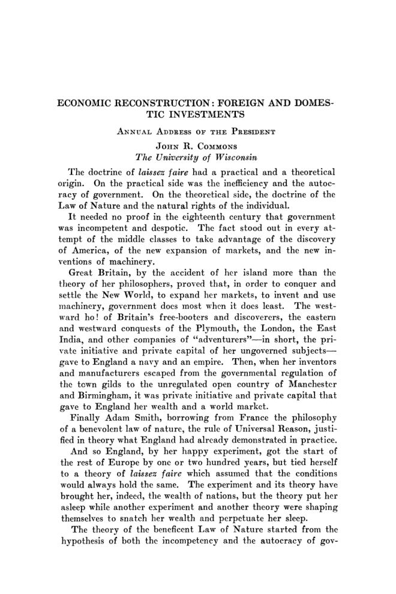

Commons e o fim do laissez-faire
Leitura: 9 min
No discurso presidencial de 1917, John R. Commons declara morto o laissez-faire, descreve a teoria americana do “barril de toucinho” e propõe que o poder público decida onde investir o capital da reconstrução.


Na noite de 27 de dezembro de 1917, no Gold Room do Hotel Adelphia, em Filadélfia, três presidentes de associações científicas falaram na mesma sessão: o da American Sociological Society, o da American Political Science Association e John R. Commons, da University of Wisconsin, pela American Economic Association. O título de Commons falava de investimentos externos e internos; o argumento ia além e terminava numa frase que ele repete duas vezes no texto: o laissez-faire está morto.
O discurso, publicado no suplemento de março de 1918 da American Economic Review, começa pela história da doutrina, passa por uma teoria do valor tirada das decisões da Suprema Corte americana e chega a uma proposta concreta sobre como obter e onde aplicar o capital necessário depois da guerra.
De onde veio o laissez-faire?
A doutrina, diz Commons, teve uma origem prática e outra teórica. Na prática, a ineficiência e a autocracia dos governos do século XVIII; na teoria, a lei da natureza e os direitos naturais do indivíduo. A Inglaterra, mais pelo acaso de ser ilha que pela filosofia, mostrou que o governo faz mais quando faz menos: a iniciativa e o capital privados lhe deram marinha, império e mercado mundial. Adam Smith justificou em teoria o que a Inglaterra já demonstrara na prática, e o país ganhou uma dianteira de um ou dois séculos, mas amarrado a uma teoria que supunha condições permanentes.
A Alemanha, prossegue, partiu de outra hipótese: o poder do Estado não viola a lei natural, é seu fruto. Não há direitos naturais acima da vontade do Estado. Mas, como a iniciativa individual continua sendo a maior fonte de poder, a liberdade é substituída por um uso científico do poder do Estado para levar o indivíduo a se esforçar ao máximo: recompensas, promoções, honrarias, subsídios, escolas técnicas que ofereçam cérebros em excesso ao mercado.
“Abolir a liberdade, mas substituí-la pelo incentivo.” (“Abolish liberty, but substitute inducement.”)
A guerra, para Commons, é o choque entre esses dois experimentos e suas teorias, e qualquer que seja o resultado é um tempo de reconstrução da teoria e da prática. A teoria subjacente a todas as ciências sociais é a do valor. A economia herdou a de Adam Smith, a do indivíduo isolado em busca da maior renda líquida; a sociologia vinha elaborando uma teoria social do valor; faltava uma teoria política ou jurídica, e ela já surgia da democracia americana.
O que é a teoria do “barril de toucinho”?
Nos Estados Unidos, o laissez-faire não nasceu da autocracia, mas da ineficiência: quando os empreendimentos públicos faliram, o povo escreveu o laissez-faire nas constituições. E a teoria americana dos direitos naturais nunca foi uma teoria de deixar fazer. Foi, diz Commons, a teoria do direito igual de qualquer um a obter tudo o que puder do governo: a tarifa protecionista negociada em troca de votos, a lei de terras para colonos e as leis de madeira, deserto e mineração, as verbas de rios, portos e prédios públicos, os cargos públicos.
“Não uma teoria de deixar em paz, mas uma teoria de vamos pegar.” (“Not a let-alone theory but a let's-grab theory.”)
Essa teoria serviu ao século XIX americano, de conquista e expansão para o oeste, e tem uma meia verdade: o Estado existe para os indivíduos. A metade que falta é a dos deveres. Se os direitos vêm do Estado, e não da natureza, o mesmo ato que concede um direito impõe um dever equivalente. A falta não se sentia enquanto quem não tinha propriedade podia ir para o oeste e consegui-la; sente-se no século XX, quando quem tem poucos direitos precisa negociar com quem os tem.
Como a Suprema Corte redefiniu a propriedade?
Commons encontra a outra metade em três linhas de decisões da Suprema Corte. Nos casos Granger, a propriedade afetada por uso público passou a depender, na prática, do poder de persuadir os eleitores. Pela regra de avaliação unitária, a concessionária de serviço público deixou de ser tributada só pelos bens físicos e passou a sê-lo pelo valor capitalizado de todo o seu poder de ganho. E as contribuições de melhoria permitem cobrar o custo de uma obra pública dos imóveis especialmente valorizados por ela, e não de todos os contribuintes. A contribuição de melhoria, lembra, é uma espécie de imposto sobre lucros extraordinários, um imposto sobre o incremento não ganho.
Dessas decisões resulta outra definição de propriedade: não mais a posse exclusiva de uma coisa física, mas valor; valor é poder sobre os outros; e o tribunal protege não necessariamente o valor de mercado sem regulação, mas o valor razoável da propriedade. As disputas futuras, conclui, girarão sobre o tipo e a extensão do controle do Estado sobre o valor da propriedade privada.
Para onde vai o capital excedente?
Os pioneiros do oeste, diz Commons, eram especuladores, movidos menos pelo ganho diário que pela valorização futura da terra, e o mesmo princípio está em todo negócio. Enquanto havia recursos livres, a especulação desenvolvia riquezas novas e o país podia pagar recompensas excepcionais. Ocupados os recursos, os investidores passaram a disputar os já ocupados, e a especulação passou a elevar valores existentes, sem acrescentar riqueza. A consolidação em trustes foi outra fonte de lucro especulativo, também em vias de esgotamento.
A fronteira, então, saiu do país: o capital americano começava a procurar México, Canadá, China, América Central e do Sul, África e Rússia, onde o valor especulativo era baixo. Esses valores só se realizam sob a proteção diplomática e, no limite, militar do Estado. A exportação de capital, diz Commons, é para o futuro uma questão mais importante que a exportação de produtos ou a anexação de territórios. O país precisa do seu capital, mas não pode proibi-lo de sair; só pode competir com o financista internacional que o convida a sair.
O que Commons propõe?
O governo, diz, tem duas vantagens sobre o financista: pode desviar a poupança pelo poder de tributar e pode obtê-la a juros menores com títulos próprios ou garantidos. Já o fazia em projetos de irrigação e na educação industrial. Mas o risco é a teoria do barril de toucinho, que desvia os benefícios da tributação nacional e dos juros baixos para a valorização dos imóveis locais. Em projetos de irrigação, quase todo o aumento de valor criado pelo governo ficou com os proprietários especuladores, e o colono pedia ao governo alívio dos encargos.
A resposta que Commons vê na democracia americana e na Suprema Corte tem três partes: obter o capital novo com contribuições sobre os benefícios especiais criados pelos governos local, estadual e federal; reduzir ou eliminar os impostos sobre indústrias que não recebem benefício especial e disputam capital no mercado mundial; e usar o crédito público, apoiado na tributação, para comprar e operar as indústrias básicas, como rodovias, ferrovias, minas, florestas e quedas d'água. Com a regra do benefício especial, o governo poderia avançar para a propriedade pública das ferrovias sem a disputa no Congresso por ramais e terminais locais.
Imitar a Alemanha?
Commons antecipa a objeção de que essas seriam técnicas da autocracia alemã e responde que são os processos pelos quais a Alemanha se impunha ao mundo. A indústria moderna, diz, é parecida em todos os países; o que difere é o propósito. Se o objetivo é ganhar poder sobre outras nações, o capital tributado irá para marinhas, armamentos e investimentos especulativos no exterior; se é desenvolver os próprios recursos, irá para as indústrias básicas que não podem mais ficar com a especulação. Só o governo pode escolher qual propósito vem primeiro. A ineficiência do governo americano, acrescenta, é um estado de espírito, e milhares de empresários e líderes trabalhistas aprendiam nos conselhos de defesa a importância da administração pública.
Na minha leitura
Na minha leitura, o discurso interessa sobretudo pelo instrumento que propõe. Commons não defende o investimento público em abstrato; procura uma regra que impeça que os ganhos do investimento público sejam capturados por quem está perto da obra. A contribuição de melhoria cumpre essa função: liga o financiamento ao benefício e reduz o incentivo para disputar obras no Congresso.
A outra contribuição é a definição de propriedade como valor e de valor como poder, extraída de decisões judiciais e não de uma teoria do indivíduo isolado. Ela desloca a análise econômica do mercado em abstrato para as regras que determinam quem se apropria do valor, que é o terreno em que se discutem até hoje regulação de concessões, tributação da valorização imobiliária e financiamento de infraestrutura.
Glossário
- Laissez-faire
- doutrina segundo a qual o governo deve deixar a economia funcionar sem intervenção.
- Barril de toucinho (pork barrel)
- uso de verbas públicas para obras e favores locais negociados em troca de apoio político.
- Casos Granger
- decisões da Suprema Corte dos anos 1870 que admitiram a regulação de tarifas de empresas afetadas por uso público.
- Avaliação unitária (unit rule)
- tributação da concessionária pelo valor capitalizado de todo o seu poder de ganho, e não só pelos bens físicos.
- Contribuição de melhoria
- tributo cobrado dos imóveis valorizados por uma obra pública, para custeá-la.
- Incremento não ganho
- valorização de um bem que não resulta do trabalho ou do investimento do dono.
Fontes
- Economic Reconstruction: Foreign and Domestic Investments. Annual Address of the President — John R. Commons (The University of Wisconsin) (pp. 5–17). JSTOR · Internet Archive (PDF)
- Edição completa, com os demais artigos: Nº 151 do Arquivo.
Documento em domínio público (EUA, publicado antes de 1931), via JSTOR Early Journal Content e Internet Archive. Resumo e comentário do autor deste site, sem afiliação com a American Economic Association. Encontrou um erro? Escreva: a correção é publicada no próprio texto, com data.
↑ Nº 151 · Filadélfia, 1917: lucros extraordinários, terra e o fim do laissez-faire T. S. Adams e o imposto sobre lucros extraordinários →